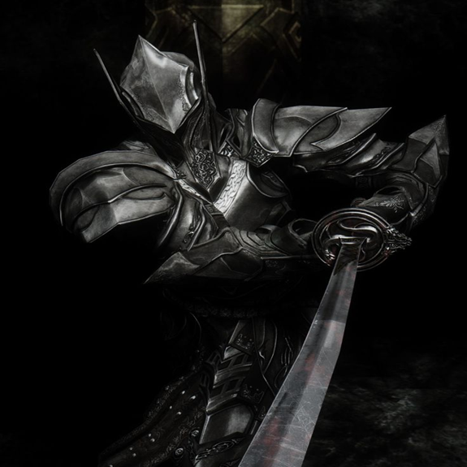

-
O último Dragonborn (Dovahkiin)
O Dragonborn, ou Dovahkiin na língua dos dragões, é um mortal escolhido pelo destino com a alma e o sangue de um dragão. Seu papel profetizado é enfrentar Alduin, o Devorador de Mundos, que ameaça a destruição de Nirn. Como último sobrevivente da execução em Helgen, o Dragonborn descobre sua habilidade inata de absorver almas de dragões e utilizar o Thu’um, a poderosa Voz dracônica. Guiado pelos Greybeards e desafiado por diversos inimigos, incluindo os Thalmor, a guerra civil em Skyrim e a reemergência dos dragões, ele trilha um caminho que pode levar à salvação ou ruína da província nórdica e de Tamriel.
ATK/ 3000 DEF/ 3000 -
Alduin, o Devorador de Mundos
Alduin, também chamado de Devorador de Mundos, é o principal antagonista de The Elder Scrolls V: Skyrim. Ele é um dragão negro ancestral e o primeiro nascido de Akatosh e o governante dos dragões. Na mitologia nórdica de Skyrim, ele é visto como uma divindade destrutiva cujo destino é consumir o mundo para reiniciar o ciclo da criação. No passado, ele comandou os dragões e subjugou os mortais, até que os antigos heróis nórdicos, incapazes de matá-lo, usaram um Pergaminho Ancião para bani-lo através do tempo.
ATK/ 3200 DEF/ 3200 -
O GUERREIRO DE ÉBANO (ebony warrior)
O Cavaleiro de Ébano (Ebony Warrior) é um guerreiro excepcional que surge apenas para jogadores de nível 80 ou superior em The Elder Scrolls V: Skyrim. Vestindo uma armadura completa de ébano e dominando tanto armas quanto magia, ele já superou todos os desafios que a vida ofereceu e agora busca um oponente digno para seu último duelo. Sentindo que seu destino é cair em uma batalha honrada, ele desafia o Dragonborn para um combate final em um local remoto, geralmente a Ruína de Last Vigil. Com resistência mágica, domínio do Thu’um e habilidades de combate superiores, ele representa um dos desafios mais difíceis do jogo, oferecendo um desfecho digno para os guerreiros mais poderosos de Skyrim.
ATK/ 2600 DEF/ 2300 -
miraak, o primeiro Dragonborn
Miraak é o principal antagonista da expansão Dragonborn de The Elder Scrolls V: Skyrim. Ele é um antigo Dragonborn que viveu milênios antes do protagonista e foi o primeiro a dominar o poder dos dragões. Originalmente um herói, Miraak foi corrompido por Hermaeus Mora, o príncipe da sabedoria e do conhecimento proibido, que o seduziu com promessas de poder ilimitado. Com o tempo, Miraak se voltou contra seus próprios aliados e buscou usar os dragões para seus próprios fins, desafiando até o próprio Alduin. Após sua queda, ele foi banido para o Santuário de Apocrypha, o reino de Hermaeus Mora, onde permaneceu aprisionado por milênios. Na expansão de Skyrim, Miraak retorna, buscando recuperar seu poder e dominar o mundo, e o Dragonborn deve enfrentá-lo em uma batalha épica. Ele é mestre em Thu’um e utiliza o poder dos dragões de maneira única, sendo um dos oponentes mais complexos e poderosos da série.
ATK/ 3500 DEF/ 3000 -
lorde harkon, o rei vampiro
Lorde Harkon é o principal antagonista da expansão Dawnguard de The Elder Scrolls V: Skyrim. Ele é um vampiro antigo e poderoso, fundador da linhagem dos Volkihar, uma facção vampírica que busca dominar Tamriel. Harkon foi transformado em vampiro há milhares de anos e, com seu poder, tentou alcançar a imortalidade completa ao buscar a Stone of Cold Fire, um artefato que lhe permitiria bloquear o sol e governar o mundo em eterna noite. Harkon é manipulador e astuto, governando seu clã com mão de ferro e buscando a destruição dos Dawnguard, um grupo de caçadores de vampiros que se opõem a seus planos. Seu objetivo é realizar um ritual que conceda a ele um poder absoluto, tornando-o um deus vampírico. Ao longo da expansão, o Dragonborn é chamado para confrontá-lo, decidindo entre se aliar a ele ou aos Dawnguard para impedir seus planos de apocalipse vampírico. Harkon é um mestre do vampirismo, com habilidades sobrenaturais, incluindo a capacidade de invocar criaturas e controlar mentes.
ATK/ 2400 DEF/ 2600 -
VAHLOK, O Dragonpriest
Vahlok, o Dragonpriest, é um antigo sacerdote dragão que serviu os dragões na era dos Nórdicos, muito antes dos eventos de Skyrim. Ele é um dos Dragonpriests mais poderosos e reverenciados, com uma ligação profunda com os dragões e o uso de magia ancestral. Sua devoção a eles foi tão grande que ele se tornou uma figura central nas antigas cerimônias e cultos dedicados aos dragões. Na expansão Dragonborn, Vahlok é revivido como um Dragonpriest espectral, ressurgindo como um dos maiores desafios para o Dragonborn. Como muitos outros Dragonpriests, ele foi corrompido pela busca de poder e pela adoração dos dragões, e foi finalmente derrotado e enterrado com sua máscara e poder mágico. Ele permanece como uma figura temível, cheio de sabedoria arcana e habilidades de magia destrutiva. Para enfrentá-lo, o Dragonborn deve superar suas habilidades mágicas e destrutivas, sendo uma das batalhas mais desafiadoras e importantes na história da expansão Dragonborn.
ATK/ 3000 DEF/ 2800 -
Paarthurnax o Dragão Ancestral
Paarthurnax é um dos dragões mais importantes de The Elder Scrolls V: Skyrim, conhecido por ser um dos mais antigos e sábios dragões vivos. Ele é o líder dos Greybeards, um grupo de monásticos que vivem no pico de High Hrothgar e que se dedicam ao estudo e à prática do Thu’um (a Voz), o poder dos dragões. Originalmente, Paarthurnax foi aliado de Alduin e participou da conquista e subjugação dos Nórdicos durante a Era do Dragão. No entanto, após refletir sobre os atos de destruição e crueldade de Alduin, Paarthurnax se rebelou contra ele, abandonando o papel de subordinado e ajudando os mortais a se libertarem do domínio dos dragões. Na atualidade, Paarthurnax age como um mentor para o Dragonborn, ensinando-lhe a usar o poder do Thu’um e oferecendo sabedoria sobre os antigos dragões e sua história. Embora sua lealdade ao Alduin seja um ponto de tensão, ele busca a redenção por seus atos passados, ajudando o Dragonborn a impedir o retorno de Alduin e enfrentar a ameaça dos dragões. Sua moral complexa e seu papel crucial na batalha contra Alduin fazem de Paarthurnax uma figura chave na narrativa de Skyrim.
ATK/ 2900 DEF/ 2100